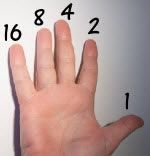
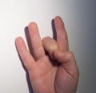
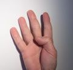
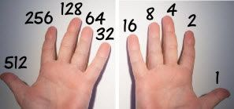
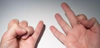
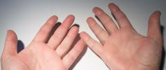

Binary Fingers!
Forget about counting to 10 on your fingers ... you can count past 1,000 if you want!
Right Hand
With just your right hand you can count to 31:
No fingers up is 0
Thumb is 1
Index finger is 2
2 and 1
makes 3
Middle finger is 4
Add your thumb
for 5
4 and
2 makes 6
4 and 2 and 1
makes 7
Fourth finger is 8
... and continue the pattern:
|
In fact you are counting in Binary:
| Number | Made by |  | ||||
| 1 | 1 | up | ||||
| 2 | 2 | up | ||||
| 3 | 2+1 | up | up | |||
| 4 | 4 | up | ||||
| 5 | 4+1 | up | up | |||
| 6 | 4+2 | up | up | |||
| 7 | 4+2+1 | up | up | up | ||
| 8 | 8 | up | ||||
| 9 | 8+1 | up | up | |||
| 10 | 8+2 | up | up | |||
| 11 | 8+2+1 | up | up | up | ||
| 12 | 8+4 | up | up | |||
| 13 | 8+4+1 | up | up | up | ||
| 14 | 8+4+2 | up | up | up | ||
| 15 | 8+4+2+1 | up | up | up | up | |
| 16 | 16 | up | ||||
| 17 | 16+1 | up | up | |||
| etc.... | ||||||
Here are some more examples:
|  |
| 16+8+2 makes 26 |
|  |
| 16+8+4+2 makes 30 |
Why?
So you can count to bigger numbers when you don't have a pencil or paper.
You can also "remember" numbers by holding your fingers in the right way.
Or you can show someone a secret number using just your hand (or hands, see later).
Your Turn
Practice counting from 0 to 31 on your fingers, just like above.
Do it many times until it becomes easy.
When you can do it well, demonstrate it to your friends!
Left Hand
Want bigger numbers? Your left hand can help:

Now we can use all 10 fingers to make numbers like these:
| 32+2 makes 34 |
|  |
| 32+16+8+4 makes 60 |
| 512+256+32+2+1 makes 803 |
And lastly, what happens when all fingers are up?
|  |
| 512+256+128+64+32+16+8+4+2+1 makes 1,023 |
So now you can count just past 1,000 using only 10 fingers. Wow.
Practice this over the next few days ... you will gain a new skill and also find binary much easier to understand.